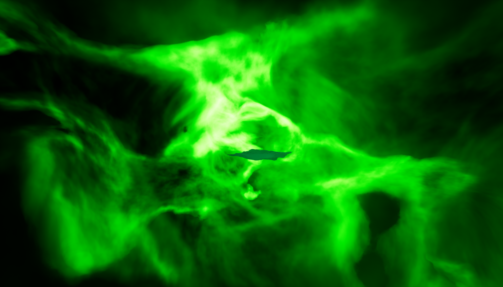
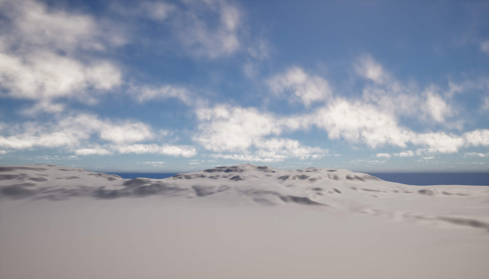
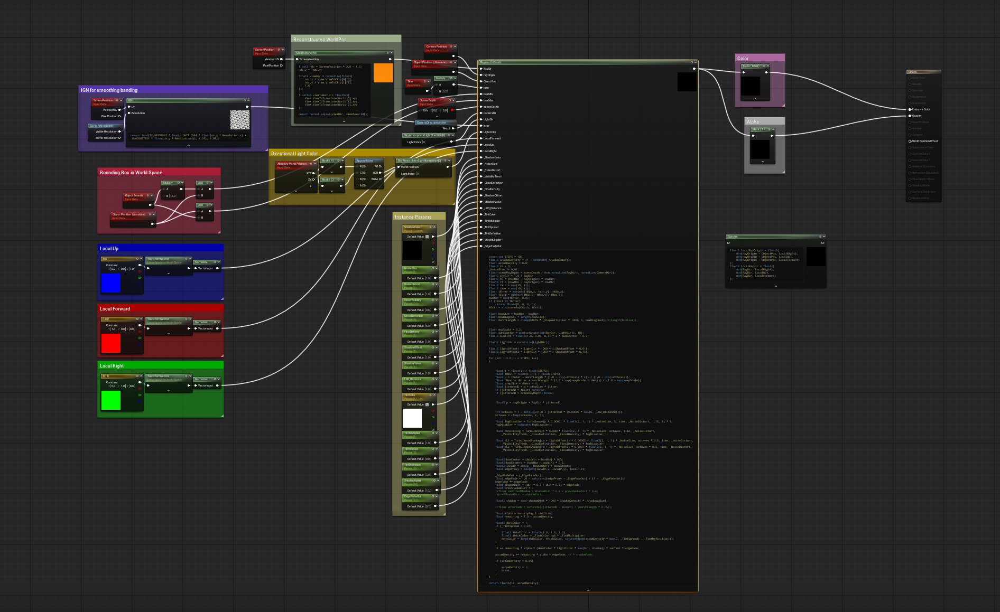

Create a surface shader in Unreal Engine that allows user to create variety of volumetric clouds. The shader is usable in both large and small volumes and it is optimized for gameplay usage. Additionally, shader is done mostly using custom nodes, without utilizing Unreal-specific volume nodes for easier porting between engines.







Specifications:
- Engine: Unreal Engine 5.6.1
- Material Domain: Surface
- Blending Mode: Premultiplied Alpha, Translucent, Additive
- Shading: Unlit
General UX: There is a single cloud shader that holds all the functionality. From that, multiple material instances can be created which allow user
to control parameters to create the type of cloud they desire. While shader can be applied on any mesh it works the best with front face culled boxes.
The box can be moved around, scaled and rotated freely; It can even overlap with another cloud volume. Coloring and shadows are controlled via both DirectionalLight
color/direction and exposed instance parameters.
Adjustable Parameters: The shader allows user to modify variety of parameters. These include parameters that affect:
- Form of clouds (NoiseSize, NoiseDitort, CloudVisibility, CloudDefinition)
- Color of clouds (ShadowValue, ShadowOffset, ShadowColor, TintColor, TintSpread, TintMultiplier, TintDefinition)
- Optimization/quality (RaymarchedSteps, StepSizeMultiplier, LOD_Distance, EdgeFadeOut)
The volume within box is rendered using Raymarching. Each ray starts it's march either from a surface of the box
or it's volume depending on camera position. The continues to march, sampling nonoise functions along the way to accumulate density of cloud and it's shadows.
Initially, each step was additionally executing additional steps towards light direction to accumulate shadows. However, this approach has been changed
later on and replaced with directional derivative approach to save on performance.
The coloring of clouds is calculated using multiple variables. DirectionalLight gives clouds their base color.
Shadow color and intensity is controllerd using exposed parameters. Additionally, a tint can be added to create color variations or hightlights.
